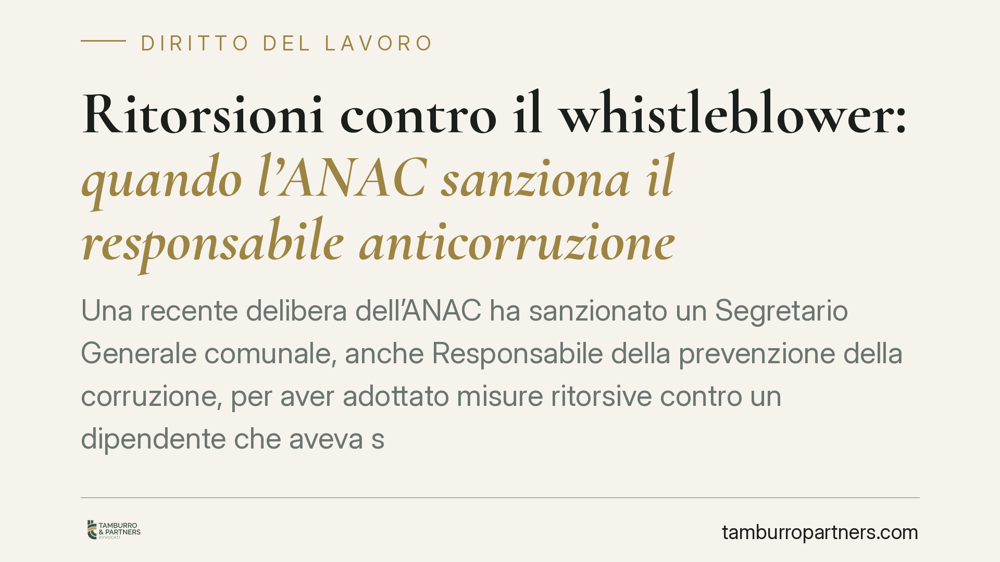

Ritorsioni contro il whistleblower: quando l'ANAC sanziona il responsabile anticorruzione
Una recente delibera dell'ANAC ha sanzionato un Segretario Generale comunale, anche Responsabile della prevenzione della corruzione, per aver adottato misure ritorsive contro un dipendente che aveva segnalato illeciti. Il caso conferma un punto centrale: chi ricopre ruoli di garanzia risponde personalmente delle condotte ritorsive, secondo il regime del d.lgs. 24/2023.

Il caso
Secondo una recente delibera, l'ANAC ha irrogato una sanzione amministrativa pecuniaria di 10.000 euro a un Segretario Generale comunale, che rivestiva anche il ruolo di Responsabile della prevenzione della corruzione e della trasparenza (RPCT).
La contestazione riguarda l'adozione di misure ritorsive — procedimenti disciplinari e sanzioni economiche — nei confronti di un dipendente che aveva effettuato una segnalazione di illeciti (whistleblowing). L'Autorità ha ritenuto sussistente il nesso tra la segnalazione e le misure adottate a danno del segnalante.
Il profilo che rende il caso significativo è la posizione del soggetto sanzionato: il RPCT è la figura chiamata a presidiare i canali di segnalazione e a tutelare chi li utilizza. La sanzione colpisce proprio chi doveva garantire quella tutela.
Inquadramento normativo
Il regime applicabile alle ritorsioni contro i segnalanti è oggi quello del d.lgs. 24/2023, che ha recepito la direttiva (UE) 2019/1937 e ha ridisegnato la disciplina del whistleblowing, superando per i profili qui rilevanti il precedente assetto.
Due disposizioni sono decisive.
L'art. 21 del d.lgs. 24/2023 attribuisce all'ANAC il potere di irrogare sanzioni amministrative pecuniarie da 10.000 a 50.000 euro quando accerta che sono state commesse ritorsioni. La sanzione di 10.000 euro applicata nel caso in esame si colloca al minimo edittale.
L'art. 17 del d.lgs. 24/2023 disciplina l'inversione dell'onere della prova: quando il segnalante dimostra di aver effettuato una segnalazione e di aver subìto un pregiudizio, si presume che quest'ultimo sia conseguenza della segnalazione. Spetta a chi ha adottato la misura provare che essa è fondata su ragioni estranee e autonome rispetto alla segnalazione.
L'art. 54-bis del d.lgs. 165/2001 ha rappresentato il primo presidio per il settore pubblico, ma il regime sanzionatorio e probatorio oggi vigente è quello del d.lgs. 24/2023.
Implicazioni pratiche
Il meccanismo dell'art. 17 sposta il rischio processuale su chi adotta la misura. La sequenza temporale diventa centrale: se procedimenti disciplinari o sanzioni economiche seguono a breve distanza una segnalazione, scatta la presunzione di ritorsione. Non basta invocare la legittimità formale del provvedimento; occorre dimostrare che sarebbe stato adottato comunque, a prescindere dalla segnalazione, sulla base di elementi preesistenti e documentati.
Il secondo dato è la responsabilità personale. La sanzione dell'ANAC non colpisce l'ente, ma la persona fisica che ha posto in essere o determinato la condotta ritorsiva. Chi riveste ruoli di garanzia — RPCT, dirigenti del personale, gestori dei canali di segnalazione — risponde in prima persona.
Per i datori di lavoro pubblici e privati, il caso segnala che la mera adozione formale di un canale di segnalazione non è sufficiente: rileva la gestione concreta delle conseguenze per il segnalante.
Cosa fare in concreto
- Separate le funzioni. Chi gestisce le segnalazioni non deve avere potere disciplinare diretto sul segnalante; evitate cumuli di ruoli che generano conflitti strutturali.
- Documentate l'autonomia dei provvedimenti. Prima di avviare procedimenti disciplinari verso un segnalante, ricostruite per iscritto le ragioni oggettive e la loro origine, dimostrando che sono indipendenti dalla segnalazione.
- Verificate la sequenza temporale. Mappate la cronologia tra segnalazione e ogni misura successiva: consigliamo di trattare con particolare cautela i provvedimenti ravvicinati nel tempo.
- Formate le figure di garanzia. RPCT e gestori dei canali devono conoscere il regime del d.lgs. 24/2023, in particolare l'inversione dell'onere probatorio e il proprio rischio sanzionatorio personale.
- Conservate le evidenze. Archiviate in modo tracciabile i documenti che provano la legittimità e l'autonomia di ogni decisione riguardante un segnalante, così da poter assolvere l'onere probatorio in caso di contestazione.
Disclaimer
Contributo informativo a cura di Tamburro & Partners - Avv. Giuseppe Tamburro. Non costituisce parere legale.
Ogni storia di lavoro ha i suoi tempi.
Se gestisci HR e vuoi un confronto su contenzioso, ispezioni o licenziamenti, scrivi allo studio. Ti rispondiamo entro un giorno lavorativo.